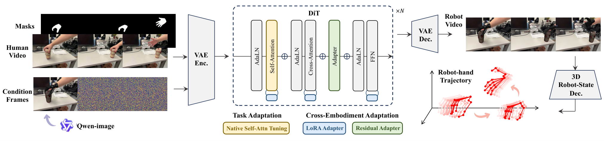
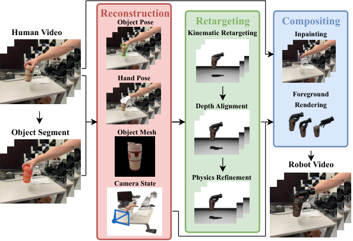

Human VideoVideo EditingCross-EmbodimentDatasetManipulation
제출: 2026년 8월 19일 (v1) · RoboEdit-14M (174K 쌍, 14M 프레임, 7개 임바디먼트)
한 줄 요약 (TL;DR)
사람이 손으로 물체를 조작하는 인터넷 영상을 같은 장면·같은 궤적의 로봇 영상 쌍으로 자동 변환해 로봇 학습 데이터를 대규모로 만드는 시스템. 두 파트로 구성: (i) RoboEdit-ADC(Automated Data Curation, 자동 데이터 큐레이션)는 손·물체·카메라의 3D 상태를 복원하고 로봇 손으로 리타게팅(retargeting, 사람 관절 궤적을 로봇 관절 궤적으로 변환)한 뒤 사람 픽셀을 지우고 로봇을 합성해 174K 영상 쌍(14M 프레임, 7종 로봇 임바디먼트)의 RoboEdit-14M 데이터셋을 생성; (ii) RoboEdit-Trans는 이 데이터로 학습된 비디오 편집 모델로, 사람 조작 영상을 입력받아 로봇 조작 영상으로 바꾸면서 각 프레임의 3D 손 상태도 함께 예측. 편집 품질에서 SSIM 0.9282 / LPIPS 0.0470로 OmniWeaving·ReCo를 큰 폭 상회, 편집 영상을 궤적 조건으로 사용한 PPO 제어기가 시뮬레이션에서 Panda 71% / XHand 62% 성공률 달성.
1배경 · 문제의식
로봇 조작 모델(예: VLA — Vision-Language-Action, 시각·언어·행동을 하나로 잇는 정책)을 학습하려면 로봇 시연 데이터가 절대적으로 부족하다. 반면 유튜브·데이터셋에 있는 사람 손 조작 영상은 사실상 무한하지만, 사람 손 픽셀·형태·운동 특성이 로봇과 달라 정책이 그대로 배우기 어렵다(임바디먼트 갭, embodiment gap — 데모 주체와 실제 로봇의 형태 차이).
기존 접근은 크게 두 갈래: (a) 사람 손을 대충 지우고 로봇 손을 그림 수준으로 인페인팅(inpainting, 지워진 영역을 그럴듯한 픽셀로 채우기)해 붙이면 물리적·기하학적으로 어긋나거나 접촉/폐색이 깨지고, (b) 시뮬레이션에서 새로 생성하면 실세계 시각 다양성이 없다. 저자들은 "편집(edit)" 관점으로 문제를 재정의한다 — 원본 사람 영상의 배경·조명·카메라 이동·물체 궤적은 그대로 보존하고, 사람 손 픽셀과 그 3D 상태만 로봇으로 정확히 바꾸는 문제로.
2핵심 Contribution
RoboEdit-ADC — 자동 데이터 큐레이션 파이프라인: RGB 사람 조작 영상만 입력으로 받아 손·물체·카메라의 3D 상태를 복원하고, 7종 로봇 손으로 리타게팅한 뒤 사람을 지우고 로봇을 합성해 동일 장면·동일 궤적의 (사람, 로봇) 영상 쌍을 자동 생성.
RoboEdit-14M 데이터셋: 174,547 쌍 / 14.1M 프레임 / 총 130.9시간. 7개 임바디먼트(Ability, Allegro, SCHUNK SVH, XHand, Inspire, Unitree Dex3, Panda 그리퍼) × 5개 소스 데이터셋(DexYCB, HOT3D, TACO, GigaHands, H2O) 조합.
RoboEdit-Trans — 임바디먼트 갭 편집 모델: 사전학습된 비디오 diffusion 모델에 LoRA + Adapter를 붙여 시각적으로 사람→로봇을 바꾸면서, 추가된 3D Robot-State Decoder가 프레임별 로봇 손 3D 상태(관절각·손끝 위치)까지 예측 — 편집 영상이 로봇 정책의 감독 신호로 재사용 가능.
실제 제어에서 유용성 검증: RoboEdit이 만든 궤적을 조건으로 학습한 PPO 제어기가 Genesis 시뮬레이터의 512 랜덤화 환경 × 18 YCB 물체에서 Panda 71% / XHand 62% 성공률을 기록.
3Method
비유: RoboEdit은 사람이 요리하는 유튜브 영상을 받아, 같은 부엌·같은 재료·같은 손동작 순서를 유지한 채 사람 손만 로봇 팔로 "포토샵 편집"하고, 편집한 로봇의 관절이 몇 도로 굽혔는지까지 알려주는 시스템이다.
Part A. RoboEdit-ADC — 3D 복원 → 리타게팅 → 합성 (Figure 2)
1) 3D 인터랙션 복원. 입력 RGB 영상에서 오프더셸프 모델들을 순차 적용:
HaMeR(Hand Mesh Recovery, 이미지에서 사람 손의 3D 관절·메쉬를 추정) — 손 궤적
SAM 2(Segment Anything Model 2, 시간 축까지 지원하는 세그멘테이션) — 물체 마스크
TRELLIS(단일 이미지에서 3D 자산을 만드는 모델) — 물체 3D 지오메트리
FoundationPose — 물체 6DoF 자세 트래킹
VGGT(Visual Geometry Grounded Transformer, 다중 프레임에서 카메라 자세·깊이를 함께 추정) — 카메라 상태
단안(monocular) HaMeR은 절대 스케일이 부정확하므로 깊이 정규화(depth regularization) 단계로 보정 — 손바닥 관절을 깊이 맵에 투영해 관측된 metric 3D 앵커와 대조하고, 관절 관절각은 유지한 채 스케일만 맞춘다.
2) 사람 → 로봇 리타게팅.SPIDER 기반 역기구학(IK — Inverse Kinematics, 손끝 위치가 주어졌을 때 관절각을 역산)을 MuJoCo 시뮬레이터에서 수행. 손가락 많은 anthropomorphic hand(사람 형태의 다지 손, Allegro·XHand 등)는 손목+손끝 IK, 그리퍼는 손목 자세에서 턱(jaw) 자세를 유도. 이후 물리 기반 정제 손실로 최적화:
Lret = λtrackLtrack + λgeoLgeo + λcontactLcontact + λtempLtemp
Ltrack: 원본 사람 궤적을 따라감 · Lgeo: 물체 관통 페널티(로봇 손가락이 물체를 뚫지 않도록) · Lcontact: 접촉 관계 보존 · Ltemp: 시간축 부드러움. 직관: "원본 사람 동작을 최대한 따라가되, 관통 없이·접촉 유지하며·떨림 없이."
3) Robot Interaction Compositing. 사람 픽셀은 MiniMax-Remover(비디오 인페인팅 도구)로 지워 깨끗한 배경을 만들고, 원본 카메라 모션 그대로 로봇 전경을 렌더링해 배경 위에 합성 — 원본 장면·시점을 그대로 유지한 채 손만 로봇으로 교체.
Part B. RoboEdit-Trans — 비디오 편집 모델 (Figure 1)
목표: Fθ(v1:Th, e) → (v̂1:Tr,e, q̂1:Te). 사람 조작 영상 v1:Th와 로봇 임바디먼트 지시자 e를 받아, 편집된 로봇 영상 v̂r,e와 프레임별 로봇 상태 q̂e를 동시 예측.
Cross-Embodiment Adaptation Modules. 사전학습된 비디오 diffusion 백본을 그대로 두고 두 종류의 어댑터만 추가:
LoRA(Low-Rank Adaptation, 큰 가중치 W₀에 낮은 랭크 보정 항 BA만 추가로 학습하는 파라미터 효율적 파인튜닝): fLoRA(x) = W₀x + (α/r)BAx. 시공간 표현을 로봇 외형에 맞게 조정.
Residual Bottleneck Adapter(입력에 작은 MLP 보정을 residual로 더하는 삽입 모듈): fAda(h) = h + W²Ada φ(W¹Ada LayerNorm(h)). 손 지오메트리와 상호작용 패턴을 정교화.
3D Robot-State Decoder. 편집만 하면 로봇 관절값을 알 수 없어 정책 학습에 못 쓴다. 그래서 편집된 영상에서 프레임별 2D 손바닥 앵커, 손끝 위치, 손바닥 프레임 좌표, 관절 구성을 함께 예측하는 디코더를 추가:
Mask-aware ResNet-34 인코더가 로봇별 예측 헤드로 프레임별 상태를 뽑고,
이후 temporal Transformer가 전 시퀀스에 걸쳐 상태를 다듬어 시간 일관성 확보,
Forward Kinematics(관절각 → 손끝 위치 계산)로 카메라 좌표계 궤적 생성.
세 단계 손실: (a) 앵커 heatmap/좌표/가시성 손실, (b) 공간 손실(2D 손끝·3D 지오메트리·관절 상태·카메라 내부 파라미터), (c) 시간 손실(모션·residual).
지표 설명 — SSIM(Structural Similarity, 0~1, 높을수록 구조 유사) · LPIPS(Learned Perceptual Image Patch Similarity, 낮을수록 지각적으로 유사) · Edit LPIPS(편집 영역만의 LPIPS) · BG SSIM(배경만의 SSIM, 배경 보존도) · VBench AQ/DD/MS(AI 비디오 벤치의 미학 품질·동적 다이나믹·모션 매끄러움) · OpenVE Overall(비디오 편집 종합 점수, 높을수록 좋음).
모델
SSIM↑
LPIPS↓
Edit LPIPS↓
BG SSIM↑
VBench AQ↑
VBench DD↑
VBench MS↑
OpenVE↑
RoboEdit-Trans
0.9282
0.0470
0.0171
0.9188
0.4832
0.6300
0.9956
3.2511
OmniWeaving
0.8107
0.1590
0.0625
0.8855
0.4478
0.6900
0.9955
3.1634
ReCo
0.8433
0.1366
0.0546
0.8869
0.4827
0.4967
0.9939
3.1255
8개 지표 중 7개 최고. SSIM 0.9282 vs OmniWeaving 0.8107(+0.117), LPIPS 0.0470 vs 0.1590(1/3 수준). 배경 보존(BG SSIM 0.9188)이 특히 우수 — "편집" 관점 설계가 원본 장면을 뭉개지 않음을 시사.
실 로봇 제어 성능 (Genesis 시뮬레이션)
RoboEdit이 생성한 궤적을 조건으로 사용한 Trajectory-conditioned PPO(Proximal Policy Optimization, 강화학습의 대표 정책 최적화 방법) 제어기를:
512 randomized envs × 18 YCB 물체(Yale-CMU-Berkeley 표준 물체 세트, 조작 벤치마크에서 흔히 사용)에서 평가
Panda 그리퍼: 71% / XHand(다지 손): 62% 성공률
해석: 자동 생성 데이터가 실제 제어 정책의 감독 신호로 유효하며, 그리퍼 vs 다지 손에서 예상대로 그리퍼가 더 쉬움(자유도 낮음).
5Ablation (주요 발견)
Adaptation Modules 조합 (표 3)
LoRA
Adapter
SSIM↑
LPIPS↓
Edit LPIPS↓
BG SSIM↑
✗
✗
0.9255
0.0494
0.0179
0.9174
✓
✗
0.9264
0.0490
0.0176
0.9181
✗
✓
0.9276
0.0478
0.0173
0.9186
✓
✓
0.9282
0.0470
0.0171
0.9188
Adapter 단독이 LoRA 단독보다 낫고(0.9276 vs 0.9264), 둘을 결합할 때 최고. Adapter가 손 지오메트리·상호작용 정교화에, LoRA가 시공간 스타일 전이에 각각 기여함을 시사. 절대 차이는 작지만(0.9255→0.9282) 편집 LPIPS는 4%(0.0179→0.0171) 개선.
기타 관찰
깊이 정규화(depth regularization): 단안 HaMeR의 스케일 오차 보정 없이는 로봇 손이 물체 위로 뜨거나 뚫는 일이 잦아 리타게팅 품질이 급락(그림 6 정성).
실+합성 혼합: 실 145.5K + 합성 29.1K 조합이 데이터 다양성을 담보 — 합성 부분은 원본에 없는 배경/조명 augmentation 담당.
6핵심 Figure / Table

Figure 1 — RoboEdit-Trans architecture. 사전학습 비디오 diffusion 백본에 LoRA와 Adapter를 붙여 사람 조작 영상을 로봇 조작 영상으로 편집하는 동시에, 3D Robot-State Decoder가 프레임별 로봇 손의 3D 상태(관절각·손끝 위치)를 함께 예측하는 구조. (출처: arXiv:2608.18948)

Figure 2 — RoboEdit-ADC pipeline. RGB 사람 영상 → (HaMeR·SAM 2·TRELLIS·FoundationPose·VGGT로) 3D 인터랙션 복원 → SPIDER 기반 IK로 7종 로봇 손에 리타게팅 → MiniMax-Remover로 사람 제거 후 로봇 합성. 최종적으로 (사람, 로봇) 영상 쌍 174K개(RoboEdit-14M) 생성. (출처: arXiv:2608.18948)
Table 2 (편집 품질 벤치마크) — 8개 지표 중 7개 최고. 캡션(원문): "Quantitative comparison on 300 held-out cases across image-level (SSIM, LPIPS, Edit LPIPS, BG SSIM) and video-level (VBench, OpenVE) metrics." RoboEdit이 픽셀·지각·비디오·편집 지표 전반에서 OmniWeaving·ReCo를 앞섬.